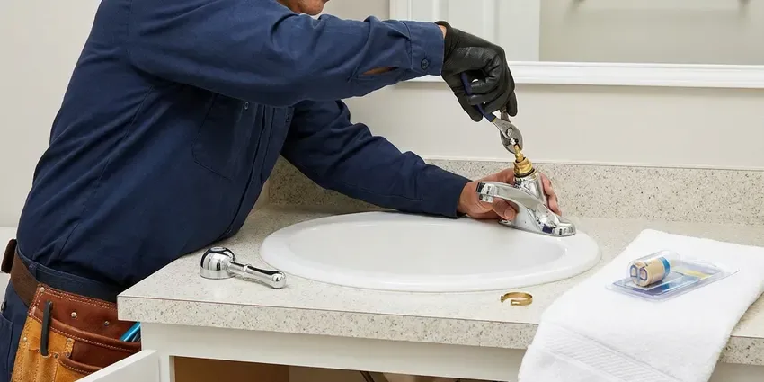
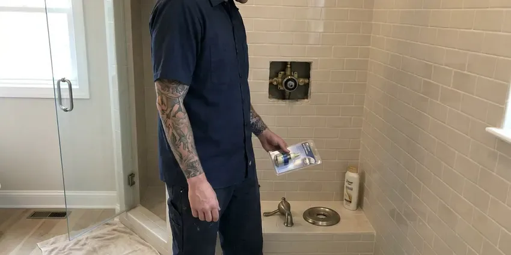

Shower Installation in Tuscaloosa, AL
For reliable shower installation in Tuscaloosa, AL, look no further than BRV Plumbing. We handle all types of shower setups.
- Fast, Reliable Service
- Expert Plumbers
- Upfront Pricing
- Code Compliant
Professional Shower Installation Services in Tuscaloosa, AL.
Contact BRV Plumbing today for a free estimate on your new shower.
Your Trusted Partner for Shower Installation in Tuscaloosa, AL
BRV Plumbing specializes in complete shower installation, ensuring your new unit is fitted perfectly and functions flawlessly. From selecting the right shower type to connecting all plumbing lines, our licensed plumbers manage every detail according to Alabama plumbing codes.
Our expertise includes:
- Install all major shower brands and models
- Ensure proper water sealing and drainage
- Handle complex plumbing rough-ins for new showers

Additional Bathroom Plumbing Services in Tuscaloosa, AL
From toilets to showers, our bathroom plumbing team in Tuscaloosa, AL handles repairs, installs, and upgrades with tidy, code-compliant work.




Tuscaloosa faucet repair specialists


Local shower repair by BRV Plumbing, Tuscaloosa

Customers
Why Choose BRV Plumbing for Shower Installation in Tuscaloosa, AL?
Our team prioritizes efficient, clean work, minimizing disruption to your home during the installation process. We ensure every shower is installed to provide years of reliable service.
- Licensed Plumbers, Our technicians are fully licensed and insured, guaranteeing expert service for your shower installation.
- Quality Materials, We use only high-grade plumbing components and materials for lasting durability and performance.
- Customer Satisfaction, Your complete satisfaction is our goal, backed by our commitment to quality workmanship.
Citywide Coverage
No matter where you are located in Tuscaloosa, our skilled plumbers are just a call away for your shower installation project. We are familiar with the diverse housing styles across Tuscaloosa, ensuring tailored solutions for every home.
Experienced Team
The BRV Plumbing team brings years of hands-on experience to every shower installation job. We understand the specific challenges and requirements of plumbing systems in Alabama homes, ensuring a smooth and efficient process.
Safety-First Approach
We take every precaution during installation to protect your home and our team. Our process includes thorough inspections to confirm all connections are secure and leak-free, preventing future issues and ensuring long-term safety.
Trusted Certified Tuscaloosa Plumbing Services Professionals
At BRV Plumbing, we take pride in providing licensed, certified plumbing services throughout Tuscaloosa, AL. Backed by recognized industry credentials, our experienced plumbers combine technical skill with genuine customer care. Whether it is repair, installation, or maintenance, we follow strict safety and quality standards to deliver long-lasting results you can trust.
Call Us Now PHCC Plumbing Contractor Recognition
PHCC Plumbing Contractor Recognition Better Business Bureau (BBB) Accreditation
Better Business Bureau (BBB) Accreditation Angi Certified Pro
Angi Certified Pro ISO 9001 Quality Management Certification
ISO 9001 Quality Management CertificationReliable Shower Installation Services in Tuscaloosa, AL
Standard Shower & Tub Installation in Tuscaloosa
BRV Plumbing handles the complete installation of standard shower and tub combinations. This includes setting the tub, installing the shower valve, connecting the showerhead and spout, and ensuring proper drainage. We work with various materials like fiberglass, acrylic, and cast iron, making sure the unit is level and securely sealed to prevent leaks, a common issue with older installations in Alabama homes if not done correctly. Our process accounts for existing plumbing layouts to minimize wall alterations.

Walk-In Shower Installation in Tuscaloosa, AL
For modern homes or those seeking greater accessibility, we specialize in walk-in shower installations. This often involves custom tile work, specific drain placements, and the installation of barrier-free entries. Our plumbers coordinate with any tile contractors to ensure proper waterproofing and slope for efficient water runoff, crucial for preventing moisture damage in Alabama's humid climate. We also advise on appropriate shower pan materials and installation techniques.
Custom Shower Enclosure Installation in Tuscaloosa
BRV Plumbing provides comprehensive services for custom shower enclosures, including multi-head showers, body sprays, and steam units. These installations require precise planning for water lines, pressure balancing valves, and drainage systems. We ensure all components are correctly sized and installed to deliver optimal performance and water flow, taking into account the water pressure variations sometimes seen in Tuscaloosa's older neighborhoods. Proper sealing is critical for these complex systems.
Shower Valve & Fixture Installation in Tuscaloosa, AL
Beyond the main shower unit, we also install new shower valves, diverters, and various fixtures. This includes pressure-balancing valves to prevent scalding, thermostatic valves for consistent temperature, and different showerhead types like rain showers or handheld units. Our team ensures all connections are watertight and that the fixtures operate smoothly, enhancing your showering experience. We can upgrade outdated fixtures to newer, more efficient models.
Commercial Shower Installation in Tuscaloosa
BRV Plumbing extends its expertise to commercial shower installations for gyms, locker rooms, and employee facilities in Tuscaloosa. These projects often involve multiple units, heavy-duty fixtures, and adherence to specific commercial plumbing codes. We focus on durable, high-volume solutions designed to withstand constant use and meet accessibility standards. Our team works efficiently to minimize disruption to your business operations during the installation process.
Luxury Shower Systems Installation in Tuscaloosa, AL
For homeowners looking for a premium experience, we install luxury shower systems that may include digital controls, integrated lighting, and sound systems. These advanced installations require specialized plumbing knowledge for smart home integration and complex water delivery. We ensure all electrical and plumbing connections are safely and correctly installed, providing a high-end, spa-like experience within your Tuscaloosa home. Brands like Moen U by Moen and Kohler DTV are common requests.
Cost-Effective Shower Upgrades in Tuscaloosa
Considering a shower upgrade without a full remodel? BRV Plumbing offers cost-effective installation options like replacing an old shower pan, converting a standard tub to a shower, or installing new fixtures. We help you choose components that fit your budget while still delivering improved functionality and aesthetics. Our goal is to provide a noticeable improvement to your bathroom's utility and appearance without extensive demolition or high costs.

Emergency Shower System Replacement in Tuscaloosa, AL
In cases of severe shower damage, such as a cracked shower pan or extensive leaks, BRV Plumbing provides emergency replacement services. A compromised shower can lead to significant water damage to your home's structure and subflooring, particularly in Alabama homes with wood framing. We respond quickly to remove the damaged unit and install a new shower, preventing further damage and restoring your bathroom's functionality as soon as possible.
Shower Installation Near Me in Tuscaloosa, AL
When you search for 'shower installation near me' in Tuscaloosa, AL, BRV Plumbing is your local, reliable choice. We pride ourselves on fast response times and thorough service, ensuring your new shower is installed correctly and efficiently. Our proximity allows us to quickly dispatch a skilled plumber to your doorstep.
Our commitment to the Tuscaloosa community means we understand the specific plumbing needs of local homes. From older houses with unique plumbing configurations to new constructions, BRV Plumbing has the expertise for any shower installation project near me.
BRV Plumbing at a Glance
- Licensed and insured plumbers serving Tuscaloosa, AL
- 24/7 emergency service with same-day scheduling
- Clear written estimates, no hidden fees
- 4.8-star rated by 549+ Alabama customers
Tuscaloosa Map
Tuscaloosa Information
- Population
- 111,338
- Area codes
- Local
- Service area
- Tuscaloosa and communities within 40 miles
- Nearby
- Northport, Alabaster, Hoover, Birmingham
In Tuscaloosa, AL, proper shower installation is vital to prevent water damage to your home's foundation and structure, especially given our humid climate and the potential for expansive clay soils to exacerbate issues from leaks.
Expert Services
Trust our professionals for reliable BRV Plumbing solutions in Tuscaloosa, AL.
Our Specialized Plumbing Services in Tuscaloosa, AL
At BRV Plumbing, we provide a complete range of plumbing services across Tuscaloosa, AL. From leak detection to full system installations, our team ensures fast, precise, and affordable service for both residential and commercial properties. Explore our core services below:


How Our Shower Installation Process Works in Tuscaloosa, AL
Our shower installation process is designed for clarity and efficiency, ensuring a smooth experience from start to finish.
Request a Quote
Start by calling BRV Plumbing at (256) 391-9413 or filling out our online form to schedule an initial consultation. We will discuss your shower installation needs and preferences.
Site Assessment
Our plumber visits your home in Tuscaloosa to assess the existing plumbing, measure the space, and discuss suitable shower options. We provide a detailed, transparent estimate.
Professional Installation
Our licensed technicians expertly install your new shower, handling all plumbing, sealing, and finishing work. We ensure it meets all local codes and operates perfectly.
Frequently Asked Questions About Shower Installation in Tuscaloosa
The cost of shower installation in Tuscaloosa, AL can vary widely, typically ranging from $1,000 to $5,000 or more, depending on the shower type, materials, and complexity of plumbing modifications. A basic tub-shower combo might be on the lower end, while a custom tiled walk-in shower with multiple features will be higher. We provide a detailed, upfront estimate after assessing your specific project.
Yes, BRV Plumbing understands that a new shower installation can be a significant investment, and we offer various financing options to help make your project more affordable. Please contact our team at (256) 391-9413 to discuss the available plans that can fit your budget and allow you to get the shower you need without delay.
DIY shower installation is generally not recommended due to the complexity of plumbing connections, waterproofing, and adherence to local building codes. Improper installation can lead to costly leaks, water damage, mold growth, and unsafe conditions. Hiring a professional like BRV Plumbing ensures the job is done correctly, safely, and to code, saving you potential headaches and expenses down the line.
Signs your old shower needs replacement include persistent leaks that damage walls or floors, extensive mold or mildew that returns despite cleaning, severe cracks in the shower pan or enclosure, or outdated plumbing that constantly fails. If repairs are becoming frequent and costly, replacement is often the more economical long-term solution. In Alabama's humid climate, preventing water damage is crucial.
Yes, BRV Plumbing frequently performs tub-to-shower conversions in Tuscaloosa homes. This involves removing the existing bathtub and installing a new shower base, walls, and fixtures. It's a popular option for improving accessibility and modernizing bathrooms without a full remodel. We ensure all new plumbing connections are correctly installed and sealed.
A standard shower installation, such as a tub-shower replacement, can often be completed within one to two days. More complex projects, like custom tiled walk-in showers or those requiring significant plumbing rerouting, might take three to five days, or longer if extensive demolition or structural changes are involved. We provide an estimated timeline during your initial consultation.
Yes, in most cases, significant plumbing work like shower installation or replacement in Tuscaloosa, AL requires a plumbing permit from the local building department. This ensures the work meets safety and code standards. BRV Plumbing handles all necessary permitting processes for your project, ensuring full compliance.
A pressure-balancing valve maintains a consistent water temperature by adjusting hot and cold water pressure to compensate for fluctuations elsewhere in your home's plumbing. A thermostatic valve, on the other hand, maintains a precise temperature setting regardless of pressure changes, offering more precise control and often found in luxury systems. Both are excellent for preventing scalding.
What People Are Saying About Our Plumbing Experts?

Laura S.
I scheduled a water heater replacement, and the team made the process smooth and affordable. The new unit works perfectly, and they cleaned up after completing the job.
Water Heater Replacement · Alabaster, ALSofia M.
Two new toilets installed in one visit, no mess left behind, and the tech even adjusted a faucet he noticed was dripping. Fair pricing and really friendly.
Toilet Installation · Hoover, AL
Emily R.
I called BRV Plumbing for plumbing repair, and the technician was fast, polite, and thorough. They explained the problem clearly and fixed it the same day. I will definitely hire them again. Highly recommended!
Plumbing Repair · Vestavia Hills, AL
Mark T.
When our office needed drain cleaning, BRV Plumbing provided quick, reliable service. The plumber arrived on time and made sure every drain flowed perfectly before leaving. Very satisfied.
Drain Cleaning · Northport, AL
Patricia H.
We had a slab leak that two other companies could not find. BRV Plumbing located it in under an hour, explained our options, and the price matched the quote to the dollar.
Slab Leak Repair · Hoover, AL
Robert G.
The trenchless sewer replacement saved our front yard. They walked us through the camera inspection footage first so we knew exactly what we were paying for.
Sewer Line Replacement · Tuscaloosa, AL